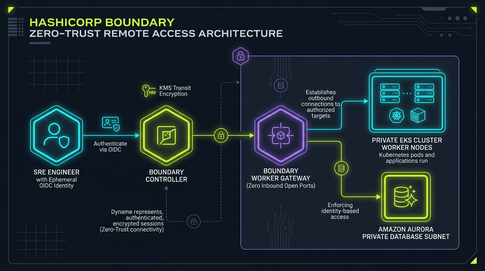

Identity-based ephemeral remote access for EKS & Aurora without SSH keys or open bastions
Deploy identity-based zero-trust remote access for EKS clusters and Aurora databases without SSH keys, open bastion ports, or legacy static VPN credentials.
Security Telemetry & Compiled Blueprint
Bastion Ports Open
Zero (0 Inbound)
Identity Auth
Okta / Azure AD OIDC
Session Credential TTL
15m Ephemeral
disable_mlock = true
controller {
name = "boundary-zero-trust-controller"
database {
url = "env://BOUNDARY_PG_URL"
}
}
listener "tcp" {
address = "0.0.0.0:9200"
purpose = "api"
tls_disable = false
tls_cert_file = "/etc/boundary/cert.pem"
tls_key_file = "/etc/boundary/key.pem"
}
HashiCorp Boundary Zero-Trust Access Studio Enterprise Topology

Overview & Architectural Superiority
Deploy identity-based zero-trust remote access for EKS clusters and Aurora databases without SSH keys, open bastion ports, or legacy static VPN credentials.
Enterprise Production Scenarios
- Cryptographic Verification: Prevent tampering in CI/CD pipeline artifact creation and deployment.
- Automated Gating: Enforce zero-tolerance security rules before artifacts schedule onto Kubernetes clusters.
- Zero Bastions / Zero Static Keys: Ephemeral, identity-based sessions verified against immutable transparency ledgers.
Infrastructure & Software Technology Stack
Zero-Trust Controller
- • HashiCorp Boundary 0.17+
- • AWS KMS Transit Encryption
- • PostgreSQL 16 HA Backend
Private Worker Mesh
- • Multi-Hop Reverse Workers
- • Zero Public Inbound Ports
- • Mutual TLS Tunneling
Target Workloads
- • Amazon Aurora PostgreSQL
- • AWS EKS Private Endpoints
- • Session Recording & Audit